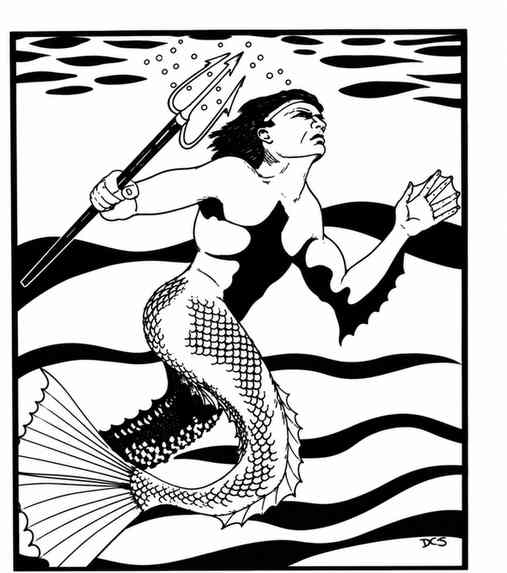
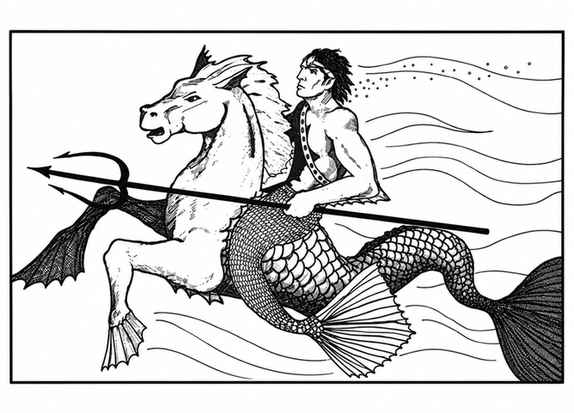
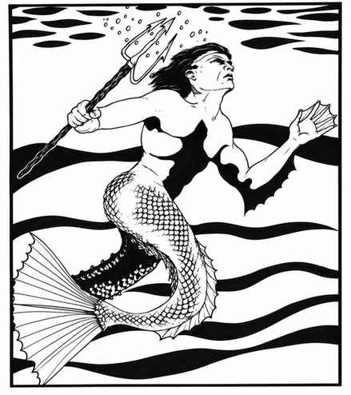

海精灵 · Triton


 |
|
据说海精灵来自水元素位面，被安置在物质位面执行人类尚未知晓的任务。它们是海洋居民，主要生活在温暖水域，也能适应浅水或深水，极少来到陆地。
每遭遇 10 名海精灵，就有 1 名额外的特殊个体（4–6 骰）；每 20 名会再有一名 7–8 骰的特殊个体；50 名以上的群体首领为 9 骰。每 10 名海精灵有 10% 概率伴随 1–4 名拥有 1–6 级魔法能力的同族。遭遇的海精灵有 90% 概率骑乘海马（65%）或巨型海马（35%）。
若在巢穴遭遇，必定还有 60 名雄性、6 名 4–6 骰特殊雄性、3 名 7–8 骰特殊雄性、1 名 7–10 级魔法师、1 名 8–11 级牧师、4 名 2–5 级牧师；雌性和幼体数量各为雄性的 100%。另有 75% 概率有 2–12 只海狮作为宠物和守卫。巢穴通常为海底城堡（80%）或雕刻洞穴（20%）。
通常只有雄性参与战斗，穿着鳞甲后护甲等级提高到 4。骑乘者使用长矛（骑枪）或三叉戟；常见武器分配为重弩与匕首 30%、剑与匕首 10%、矛与匕首 20%、三叉戟与匕首 40%。首领携带海螺号角，既能平息海浪，也能召唤 5–20 只海马、5–30 只巨型海马或 1–10 只海狮；还可令智力为动物或更低的海洋生物惊慌逃跑，对方魔法豁免 −5，持续 3–18 轮。
每 10 名海精灵有 5% 概率出现一名拥有魔法师型灵能能力的个体；掷 1d12 决定能力数量，攻击和防御模式依潜力而定。海精灵会说自己的语言、海精灵语和洛卡萨语。它们有银色皮肤，下肢渐变为银蓝色鳞片，头发深蓝或蓝绿色；崇拜海精灵之神，曾与沙华鱼人长期交战，并与刺须鲨、科阿林斯和鲨鱼人持续冲突，但通常善待不伤害其社会的人类。